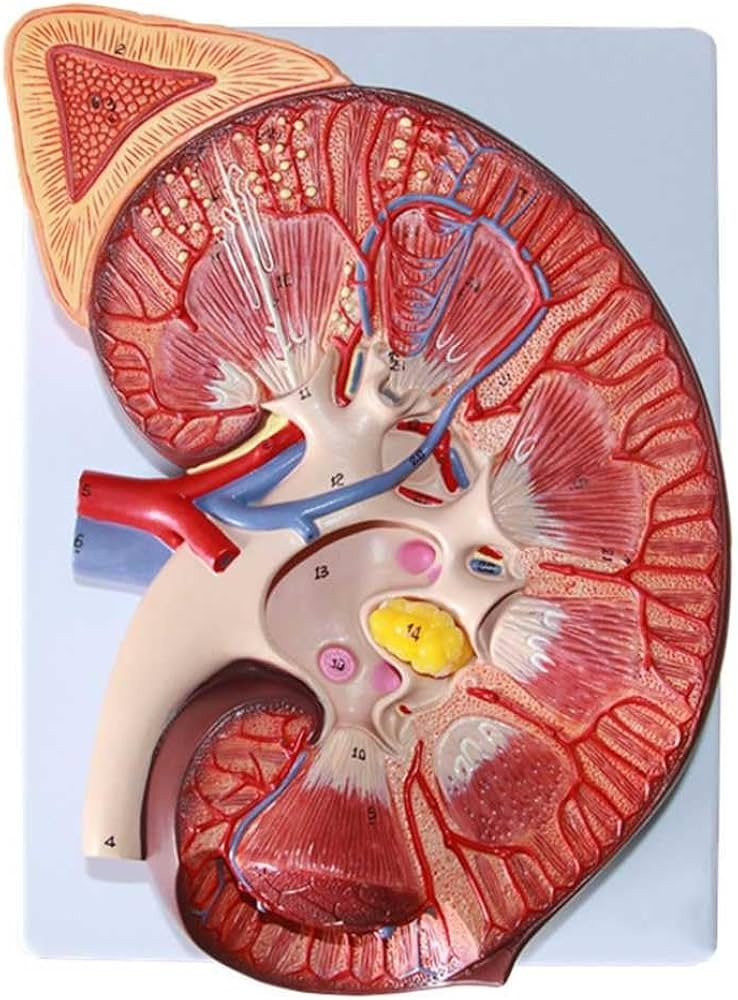

El riñón gestiona el volumen extracelular mediante la excreción de agua y solutos para mantener la estabilidad hemodinámica y el volumen circulante eficaz.
Relación entre el sodio y resistencia vascular, junto al feedback tubuloglomerular, garantizando un flujo constante ante variaciones de presión.
